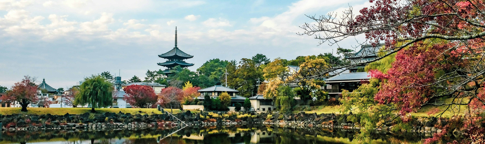

Welcome to Nara, Japan's first permanent capital! Nara is one of the most rewarding destinations in Japan, as it is home to even eight UNESCO World Heritage Sites.
Todai-ji's temple and Daibutsu
Todai-ji is a Buddhist temple in Nara with a history dating back to 738. The Daibutsu, or Great Buddha, is one of Nara's main attractions and is one of the largest golden figures in the world.

Nara Park and its' deer
Nara Park, where freely roaming deer are the symbol of the city, is particularly popular. Visitors can enjoy walks along the park's paths and admire beautiful flowers and scenery.
In Nara Park, visitors can freely see and feed the deer. There are also food stalls where you can buy various treats and food for the deer. Although deer are generally friendly, it's important to follow safety guidelines and respect their environment.